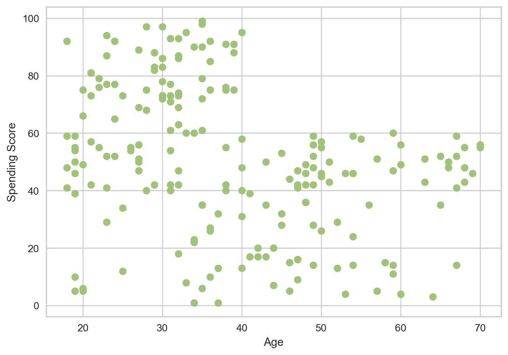
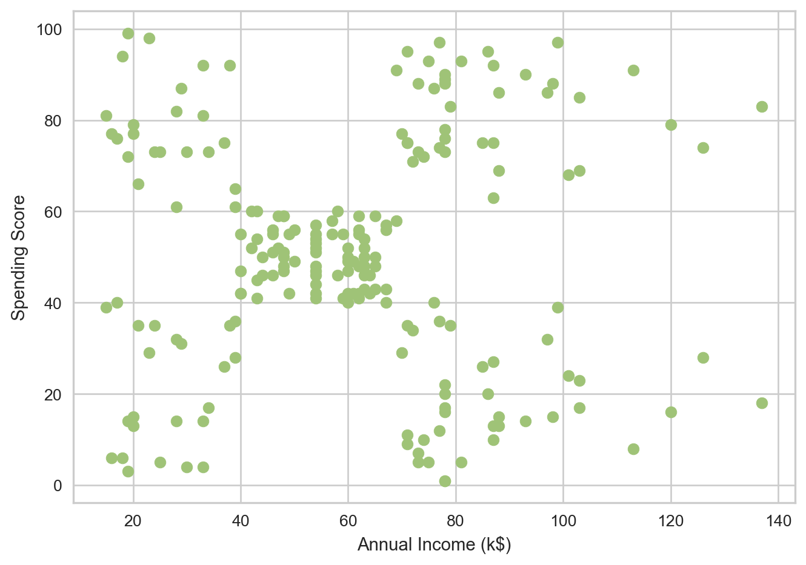
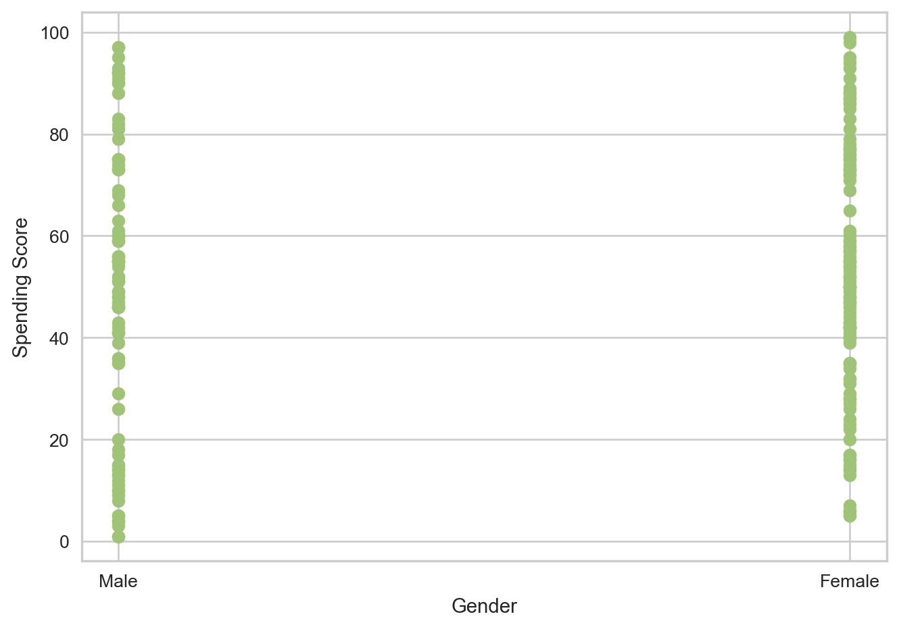
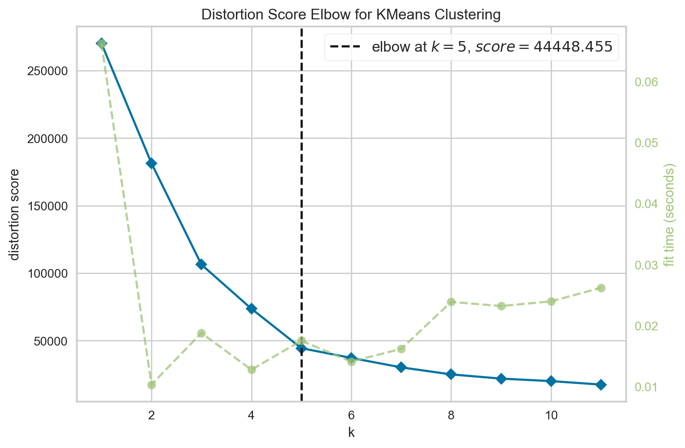
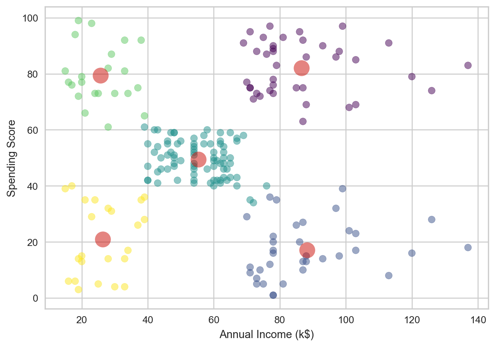
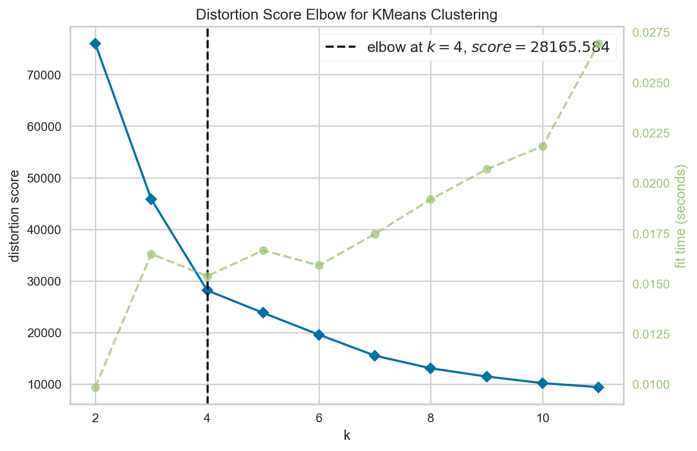
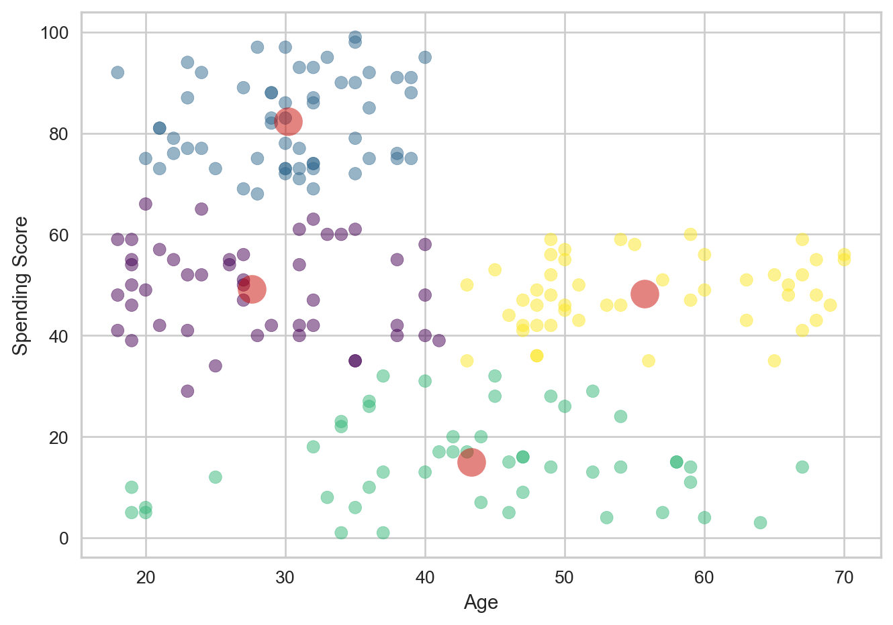

# Import libraries
import pandas as pd
import numpy as np
import matplotlib.pyplot as plt
from sklearn.cluster import KMeans
from yellowbrick.cluster import KElbowVisualizer
from sklearn.cluster import DBSCAN
from sklearn.metrics import silhouette_scoreBackground
This blog post looks at Clustering, specifically KMeans Clustering to analyze a data set on customers at a mall. It will focus on data analysis and performing a K Means on the data. We will also perform a DBSCAN to better understand the data and how well clustering in general will work.
Setup
We will first begin by checking our python version and importing the necessary libraries for this. We will use Pandas to read the csv file and manipulate its data, and matplotlib’s pyplot to display graphs and plot our data. Numpy will also be used for array manipulation. Scikit learn (sklearn) libraries will also be imported for its KMeans Clustering and DBSCAN. We will also use a yellowbrick import for the elbow visualizer, which will help find with KMeans optimizations.
Data
Let’s start by seeing what our data looks like.
# Read data
data = pd.read_csv("Mall_Customers.csv")
print(data.shape)
data.head()(200, 5)| CustomerID | Gender | Age | Annual Income (k$) | Spending Score (1-100) | |
|---|---|---|---|---|---|
| 0 | 1 | Male | 19 | 15 | 39 |
| 1 | 2 | Male | 21 | 15 | 81 |
| 2 | 3 | Female | 20 | 16 | 6 |
| 3 | 4 | Female | 23 | 16 | 77 |
| 4 | 5 | Female | 31 | 17 | 40 |
The dimensions of the data is (200, 5), so it contains the columns customerID, Gender, Age, Annual Income, and Spending Score. There are 200 data points for each individual that we can use. The customerID field will be unnecessary for our purposes, as it does not provide any valuable information. We want to know how spending score is affected by these factors on individuals, so we will start by looking at this.
Plotting the Data
To gain a better understanding of the data and what we can use, we can visualize it by plotting the features provided.
Let’s plot Age against Spending Score and see what the scatter plot for this will look like.
plt.xlabel('Age')
plt.ylabel('Spending Score')
plt.scatter(data['Age'], data['Spending Score (1-100)'], color='g')<matplotlib.collections.PathCollection at 0x129554850>
The data appears to be spread out, and it is possible to visualize some potential clusters here. One inference is that as customers get older their spending scores fall. After age 40, the scores see a immediate drop and then plateau, as in they do not go above 60 again.
Let’s look at Annual Income against Spending Score now.
plt.xlabel('Annual Income (k$)')
plt.ylabel('Spending Score')
plt.scatter(data['Annual Income (k$)'], data['Spending Score (1-100)'], color='g')<matplotlib.collections.PathCollection at 0x1295f9b90>
Here we can really see clusters present. There appears to be 5 distinct clusters, roughly one at each corner and one to the center-left. This makes using the idea of using a Clustering algorithm much more grounded, and shows potential for meaningful results.
Let’s also look at Gender really quickly and see if that happens to play a role.
plt.xlabel('Gender')
plt.ylabel('Spending Score')
plt.scatter(data['Gender'], data['Spending Score (1-100)'], color='g')<matplotlib.collections.PathCollection at 0x12965b4d0>
A scatter plot is used to see the differences between spending scores in gender’s. From the graph, it does not appear that much difference exists, so we can dive a little deeper to truly be certain.
data['Gender'].value_counts()Gender
Female 112
Male 88
Name: count, dtype: int64There are more Female customers in the data set than Male, which could mean something. Let’s take a look at the mean and median spending scores for each gender to see if any significant differences exists.
# Find Mean and Median Spending Scores for each Gender
female_data = data[data['Gender'] == 'Female']
female_avg = female_data['Spending Score (1-100)'].mean()
female_med = female_data['Spending Score (1-100)'].median()
print("Female Spending Score Average: ", female_avg)
print("Female Spending Score Median: ", female_med)
male_data = data[data['Gender'] == 'Male']
male_avg = male_data['Spending Score (1-100)'].mean()
male_med = male_data['Spending Score (1-100)'].median()
print("Male Spending Score Average: ", male_avg)
print("Male Spending Score Median: ", male_med)Female Spending Score Average: 51.526785714285715
Female Spending Score Median: 50.0
Male Spending Score Average: 48.51136363636363
Male Spending Score Median: 50.0The average spending score for Female’s is slightly higher, but not by very much. The median scores for both gender’s are also the same. This indicates that Gender is not too big a factor on how spending score is affected.
This further strengthens the argument for using a Clustering algorithm, as clustering algorithms generally do not use non-numeric data.
Setting up Clustering
Now that we know what to expect from our analysis and what data to look at, we can begin setting up our data to use for our model. We will be looking at Age and Annual Income and their effects on spending score. Let’s first begin with Annual Income.
X = data[['Annual Income (k$)', 'Spending Score (1-100)']]
X.head()| Annual Income (k$) | Spending Score (1-100) | |
|---|---|---|
| 0 | 15 | 39 |
| 1 | 15 | 81 |
| 2 | 16 | 6 |
| 3 | 16 | 77 |
| 4 | 17 | 40 |
Since we are using a KMeans algorithm, we have to find the number of clusters that makes the most sense. The KMeans will default to 8 clusters if not specified, but it is important to find the optimal number of clusters so that the data produced is well detailed and valuable.
To do this, we will use the KElbowVisualizer that will help find the optimal number of clusters. We will use this method and pass in a range of clusters and calculate their inertias (essentially the distances of data points to their closest cluster center). Based on the visualization, we choose the point where the curve cuts, or forms an elbow, and use that.
# Perform elbow method to find optimal number of clusters
k_means = KMeans(random_state=42)
viz = KElbowVisualizer(k_means, k=(1, 12))
viz.fit(X)
viz.show()
<Axes: title={'center': 'Distortion Score Elbow for KMeans Clustering'}, xlabel='k', ylabel='distortion score'>We see that the elbow forms at k = 5, meaning 5 is the optimal number of clusters to use in this case. This matches with the inference we had when analyzing our data for the annual income scatter plot initially.
Performing Clustering - KMeans
Now we can go through with actually performing our KMeans. We will perform the KMeans, then take the clusters formed and append the column to our data (a copy of our data so we do not manipulate the original set), so we know which cluster each data point belongs to. Then, we plot this on a scatter plot and also include the centroids (center of each cluster) to visualize how the data was grouped.
# Use 5 clusters
k5_means = KMeans(n_clusters=5, init="k-means++")
clusters = k5_means.fit(X)
# print(clusters)
X_2 = X.copy() # data[['Annual Income (k$)', 'Spending Score (1-100)']]
X_2.loc[:, 'Cluster'] = clusters.labels_ # Add Cluster column to data set
plt.xlabel('Annual Income (k$)')
plt.ylabel('Spending Score')
plt.scatter(X_2['Annual Income (k$)'], X_2['Spending Score (1-100)'], c=X_2['Cluster'], cmap='viridis', s=50, alpha=0.5)
centroids = k5_means.cluster_centers_
print(centroids)
centroids_x = centroids[:,0]
centroids_y = centroids[:,1]
plt.plot(centroids_x, centroids_y, 'ro',markersize=16, alpha = 0.5, label='centroids')
plt.show()[[86.53846154 82.12820513]
[88.2 17.11428571]
[55.2962963 49.51851852]
[25.72727273 79.36363636]
[26.30434783 20.91304348]]
This clustering matches what was expected, with 5 clusters and colors that indicate which cluster each point belongs to. The red circles indicate the centroids. The centroids seem valid in their placements amongst the data. We can also see their dimensions and (x,y) positions by printing the centroids array.
Lets now go through this process again, this time with Age.
X = data[['Age', 'Spending Score (1-100)']]
X.head()| Age | Spending Score (1-100) | |
|---|---|---|
| 0 | 19 | 39 |
| 1 | 21 | 81 |
| 2 | 20 | 6 |
| 3 | 23 | 77 |
| 4 | 31 | 40 |
This is our data set for this iteration of the KMeans. Let’s again try the KElbowVisualizer to find the optimal number of clusters.
# Perform elbow method to find optimal number of clusters
k_means = KMeans(random_state=42)
viz = KElbowVisualizer(k_means, k=(2, 12))
viz.fit(X)
viz.show()
<Axes: title={'center': 'Distortion Score Elbow for KMeans Clustering'}, xlabel='k', ylabel='distortion score'>This time, the elbow is present at 4 clusters, indicating that 4 clusters is likely the optimal number to use for our KMeans. Let’s do the same process as before to perform our KMeans.
k5_means = KMeans(n_clusters=4, init="k-means++")
clusters = k5_means.fit(X)
print(clusters)
X_2 = X.copy() #data[['Age', 'Spending Score (1-100)']]
X_2.loc[:, 'Cluster'] = clusters.labels_ # Add Cluster column to data set
plt.xlabel('Age')
plt.ylabel('Spending Score')
plt.scatter(X_2['Age'], X_2['Spending Score (1-100)'], c=X_2['Cluster'], cmap='viridis', s=50, alpha=0.5)
centroids = k5_means.cluster_centers_
print(centroids)
centroids_x = centroids[:,0]
centroids_y = centroids[:,1]
plt.plot(centroids_x, centroids_y, 'ro',markersize=16, alpha = 0.5, label='centroids')
plt.show()KMeans(n_clusters=4)
[[27.61702128 49.14893617]
[30.1754386 82.35087719]
[43.29166667 15.02083333]
[55.70833333 48.22916667]]
In this case, the clusters seem to work well, but there do appear to be a significant number of outliers. The centroids appear to be accurate to where the clusters are marked. but there are points within each cluster that are fairly far from their respective cluster’s center. This indicates that clustering works well here, but outliers do seem to exist.
More Data Analysis - DBSCAN
Let’s further analyze the data we have. We do see that outliers exist in the data, and some points in each cluster seem to be significantly distant from their centers.
To do this, we will use Density-Based Spatial Clustering, or DBSCAN, which will group data points based on their density. It will also identify regions with high-density, and classify points with noise(meaningless or uninterpretable data) as outliers.
To begin the DBSCAN, we have to note 2 parameters: eps and min samples. Eps, or Epsilon, is the maximum distance we will allow to exist between two data points for them to be considered neighbors. min samples, or minimum samples, which is the number of points needed within the radius for a point to determine number of clusters.
However, we first need to figure out what eps to use and how many min_samples to provide. Since we have visualized our data and know what range it could relatively be in, we can try those possible values using numpy to get our range of values.
scan_X = data[['Age', 'Annual Income (k$)', 'Spending Score (1-100)']]
eps = np.arange(7, 13, 0.5)
min_samples = range(1,6)We can now perform the DBSCAN on each value and store it. We will also find the silhouette score, which is a metric that determine how well the clustering is. It will tell us how well each clustering has done given a specific eps and min samples.
db_outputs = []
for ms in min_samples:
for ep in eps:
labels = DBSCAN(eps=ep, min_samples=ms).fit(scan_X).labels_
sil = silhouette_score(scan_X, labels)
db_outputs.append((sil, ep, ms))Now we will sort the data so that we find the eps and min_samples for the entry with the highest silhouette score.
sil_score, eps, min_samples = sorted(db_outputs, key=lambda x:x[-1])[-1]
print("eps: ", eps)
print("min_samples: ", min_samples)
print("Best silhouette_score: ", sil_score)eps: 12.5
min_samples: 5
Best silhouette_score: 0.23413283117329386The optimal eps is 12.5 and min samples is 5. We can now use this to do the planned DBSCAN.
# DBSCSAN
dbscan = DBSCAN(eps=12.5, min_samples=5)
dbscan.fit(scan_X)
dbscan.labels_array([-1, 0, -1, 0, 0, 0, -1, -1, -1, 0, -1, -1, 1, 0, -1, 0, 0,
0, 0, -1, 0, 0, 1, 0, 1, 0, 0, 0, 0, 0, 1, 0, 1, 0,
1, 0, 1, 0, 0, 0, -1, 0, 0, 0, 0, 0, 0, 0, 0, 0, 0,
0, 0, 0, 0, 0, 0, 0, 0, 0, 0, 0, 0, 0, 0, 0, 0, 0,
0, 0, 0, 0, 0, 0, 0, 0, 0, 0, 0, 0, 0, 0, 0, 0, 0,
0, 0, 0, 0, 0, 0, 0, 0, 0, 0, 0, 0, 0, 0, 0, 0, 0,
0, 0, 0, 0, 0, 0, 0, 0, 0, 0, 0, 0, 0, 0, 0, 0, 0,
0, 0, 0, 0, 2, -1, 2, 0, 2, 3, 2, 3, 2, 0, 2, -1, 2,
3, 2, -1, 2, 3, 2, -1, 2, -1, 2, 0, 2, 3, 2, 3, 2, 3,
2, 3, 2, 3, 2, -1, 2, -1, 2, -1, 2, 3, 2, 3, 2, 3, 2,
3, 2, 3, 2, 3, 2, 3, 2, 3, 2, -1, 2, 3, 2, -1, 2, -1,
-1, -1, 2, -1, -1, -1, 2, -1, -1, -1, -1, -1, -1])The labels show which cluster the data point is assigned to, and gives it that label. -1 indicates it is not clustered as it did not meet the constraints provided to the DBSCAN. These can represent the outliers in our data set. Let’s take a look at how many there are.
arr = np.array(dbscan.labels_)
np.count_nonzero(arr == -1)32The DBSCAN labeled 32 points as -1, so therefore 32 data points as outliers in our set. Let’s get a table look of this to see how many data points where in each cluster.
X_copy = scan_X.copy()
X_copy.loc[:, 'Cluster'] = dbscan.labels_
X_copy.groupby('Cluster').size().to_frame()| 0 | |
|---|---|
| Cluster | |
| -1 | 32 |
| 0 | 109 |
| 1 | 7 |
| 2 | 34 |
| 3 | 18 |
We see that the dbscan made 4 clusters. Cluster 0 had 109 data points, cluster 1 had 7, cluster 2 had 34, and cluster 3 had 18. The remaining 32 points were considered outliers.